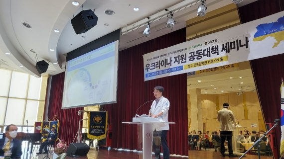

부산서도 우크라이나 재건 참여 논의 눈길
우크라이나 지원 공대위, 22일 부산서 세미나
스마트기술 기반 신도시 건설, ODA연계 제시

러시아 침공으로 시작된 우크라이나 전쟁이 100일 넘게 지속되면서 우리나라 민간단체들을 중심으로 의약품 등 인도적 지원이 활발하게 이뤄지고 있는 상황에서 신도시 건설 등 전후 우크라이나 복구 전략을 모색하는 자리가 부산에서도 마련돼 눈길을 끌었다.
우크라이나지원 공동대책위원회(공동위원장 황우여 전 교육부총리·이양구 전 주 우크라이나 한국대사)와 그린닥터스재단(이사장 정근), (사)유라시아경제인협회(이사장 양용호)는 지난 22일 오후 2시 부산진구 당감2동 온종합병원 15층 ON홀에서 법조계, 경제계, 문화계, 학계, 동유럽에 진출한 국내 기업, 국제의료봉사 단체 그린닥터스 관계자 등이 참석한 가운데 '우크라이나 인도적 지원 및 전후 복구 전력 세미나'를 가졌다.
우크라이나 지원 공동대책위원회 황우여 공동위원장은 "우크라이나 전쟁의 조기 종식은 유라시아 평화는 물론 한반도 평화에도 크게 기여한다"면서 "유라시아 관문인 부산의 기업인이나 시민사회단체가 우크라이나에 대한 인도적 지원이나 전후 복구사업에 관심을 갖는 것은 의미있는 일"이라고 관심을 촉구했다.
이번 세미나에서 액트너랩 조인제 의장은 '스마트시티 모델 적용 방안'이라는 주제로 전후 우크라이나 복구 전력을 제시했다.
조 의장은 "미국이나 EU 등 선진국에서 미처 축적하지 못한 스마트기술을 기반으로 한 신도시 개발은 대한민국이 세계에서 단연 톱클래스"라며 "전쟁으로 피폐해진 우크라이나 재건을 위해 우리나라 수도권 신도시나 부산의 정관 같은 신도시를 우크라이나에 몇 군데 조성하는 방안이 경쟁력있을 것"이라고 '신도시 수출'을 우크라이나 전후 복구 방안으로 제시했다.
10여 년 전 부산시 정책고문으로 위촉돼 개발원조사업(ODA) 자문역할을 맡았던 한국ESG경영개발원 홍은표 박사는 '대 우크라이나 ODA 협력 방안' 주제 발표에서 "우크라이나가 최근 우리나라의 ODA사업 중점협력국가로 지정돼 있는 만큼, 경쟁력 갖추고 공적부분이 담보되는 사업을 잘 발굴하면 ODA사업을 통해 우크라이나 재건을 도울 수 있다"고 주장했다.
우크라이나지원 공동대책위원회 공동위원장을 맡고 있는 이양구 직전 주 우크라이나 한국대사도 이날 '(우크라이나) 전후 복구를 위한 마스트플랜'이라는 주제발표를 통해 "미국이나 EU 등 전 세계가 전후 우크라이나 재건사업에 관심을 갖고 있고 2차 대전 직후의 '마샬풀랜'에 비유해 우크라이나 재건을 '제2 마샬플랜'으로 부를 정도여서 투입될 자본도 엄청날 것으로 보인다"며 "유라시아 관문국가인 우리나라도 국제적인 빅픽쳐를 염두에 두고 우리의 강점인 스마트기술을 기반으로 한 스마트시티 등 SOC사업 진출을 적극 모색해야 한다"고 강조했다.
세미나 1부에서는 한국교회봉사단 김태영 대표단장(부산 백양로교회 담임목사)의 '우크라이나를 향한 한국교회의 긴급구호', 그린닥터스재단 정근 이사장의 '우크라이나 전쟁난민 의료지원 결과 보고', 이주민종합지원센터 전득안 대표의 '(우크라이나) 긴급 구호진행 사항과 네트워크', 프로보노국제협력재단 김승원 대표의 '한국에 온 피란민 현황과 계획' 등 우크라이나 지원에 대한 인도적 긴급구호사업 현황보고가 있었다.
우크라이나 지원 공대위는 우크라이나 재건을 위한 국제적 공감대를 끌어내기 위해 문화계를 중심으로 세계 유명 음악인과 K팝 스타들이 꾸며가는 글로벌 콘서트(예술감독 레이첼 곽) 개최를 연내 진행할 계획이라고 밝혔다.
또 위원회가 마련한 150t의 인도적 지원 차원의 물품이 지난 5월 우크라이나로 출발했고 다음달 말 우크라이나 피란민들에게 전달된다고 한다.
이번 세미나에 참석한 기업인과 시민사회단체 관계자들은 우크라이나 지원 및 재건을 논의할 구체화된 조직의 필요성에 대해 공감대를 형성했고 '사단법인 유라시아 경제인 협회'와 협업을 통해 우크라이나 재건사업 진행에 속도감을 내기로 했다.
노주섭 기자 roh12340@fnnews.com
출처: 파이낸셜뉴스(https://www.fnnews.com/news/202206231012057507)